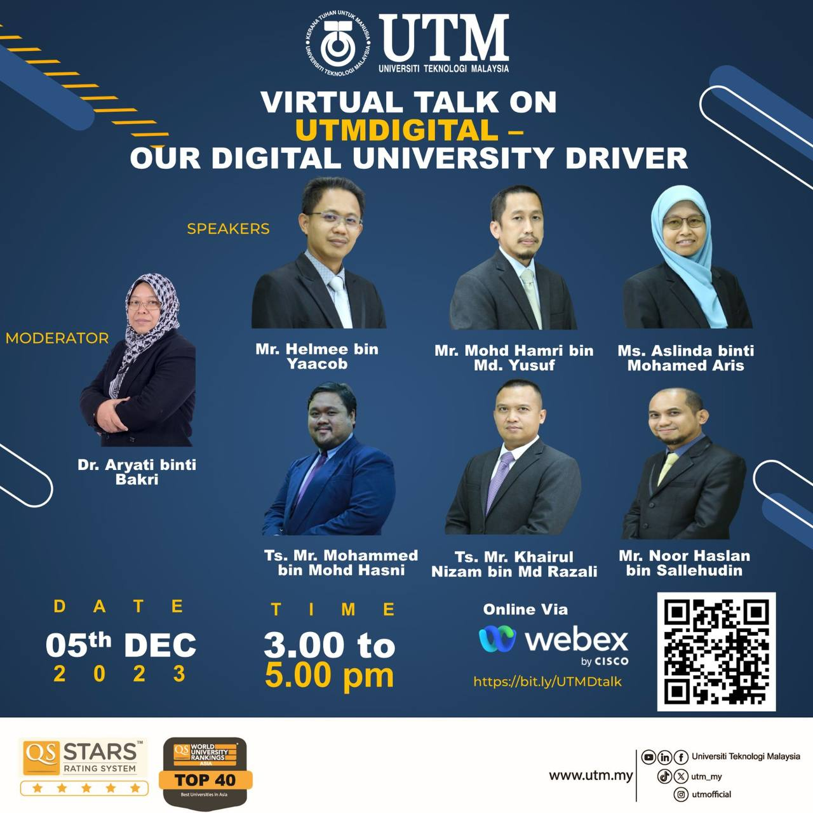
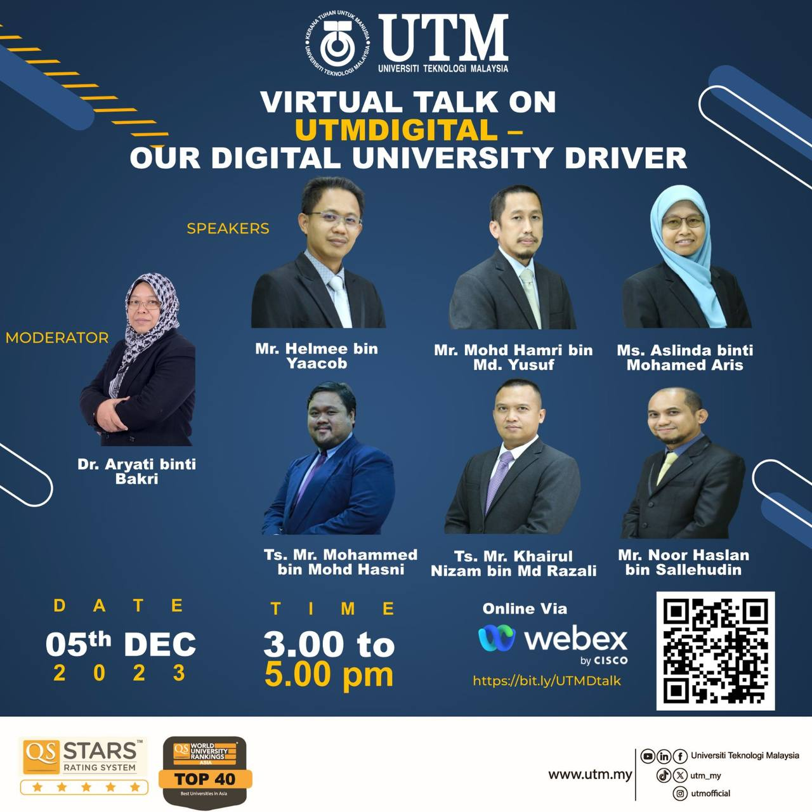
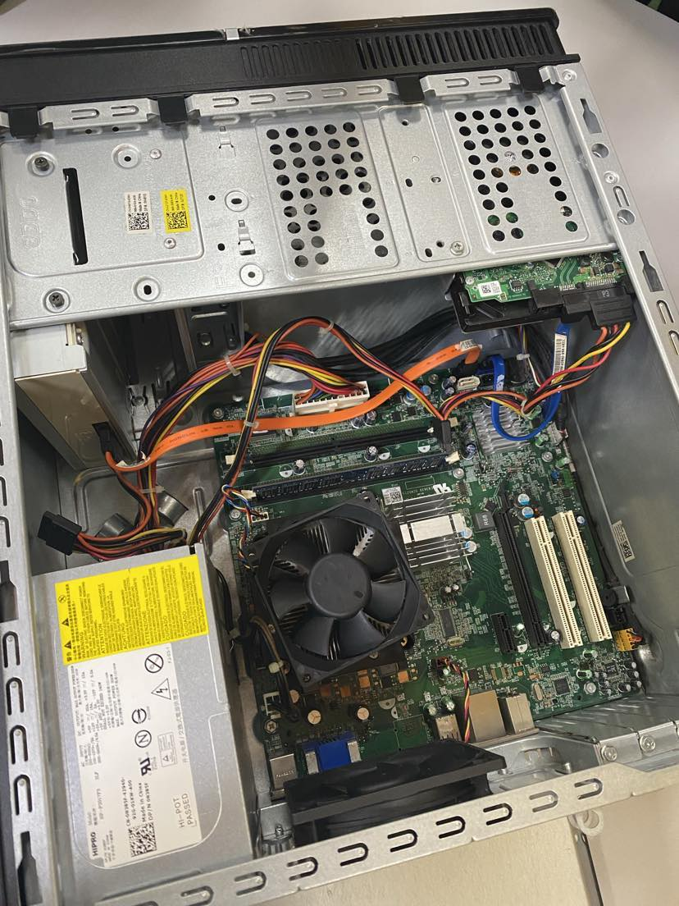
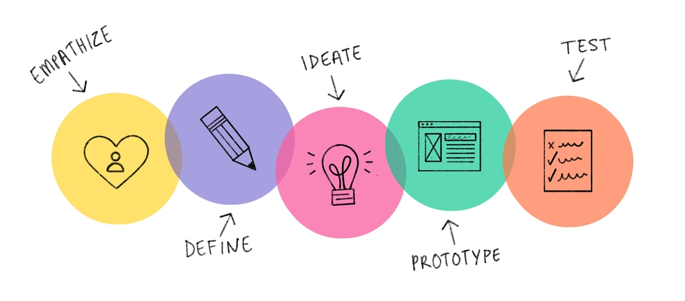
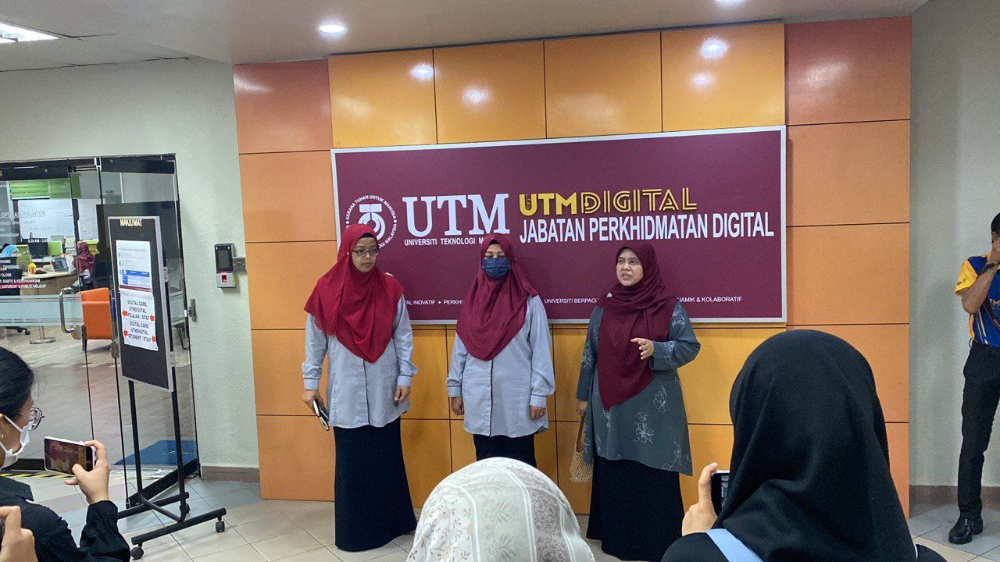
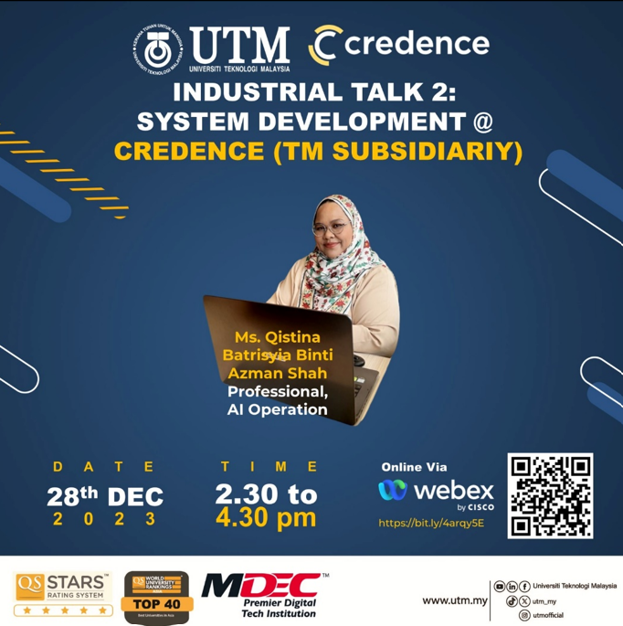
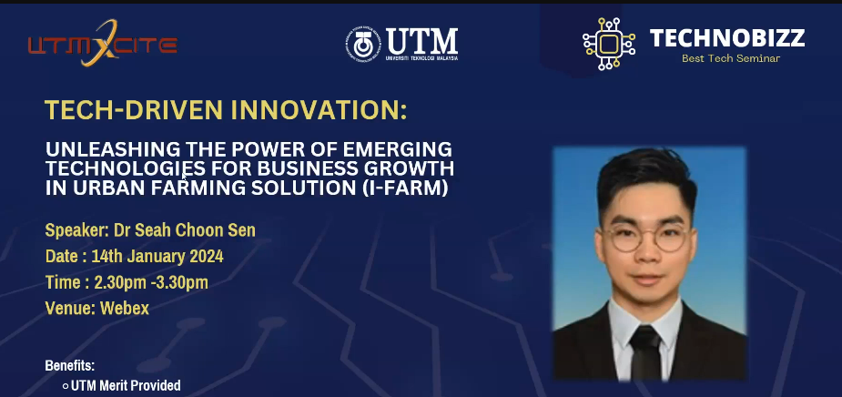

On this page, I will showcase the projects completed during the SECP1513 course, encompassing four assignments: poster, video, report, and newsletter. Additionally, our group, comprising Arisha, Nazmi, Abdallah, Hilmi, and myself, collaborated on two additional projects: PC assembly and Design Thinking Skills.
 

On November 21, 2023, my team and I participated in a webinar featuring an industrial talk with Clarity Techworks Sdn.Bhd. During the session, they provided insights into their various roles within the company, shedding light on the job scope within the computer science industry. Following the webinar, we created a poster to visually represent our understanding of the discussed topic.

We have engaged in the hands-on experience of disassembling and assembling PC components under the guidance of laboratory assistants. This hands-on approach has deepened our understanding of PC components, equipping us with the skills to independently assemble PCs in the future.

Design thinking
A financial app had been created base on these five design thinking process.Within this report, we applied the five stages of design thinking skills to formulate our plans for a novel financial application named Finance4U. We deliberated on and conceptualized an idea, subsequently creating a video to demonstrate our comprehension of this subject.

On December 18th, our group conducted a presentation on our design thinking skills, focusing on our project named FINANCE4U. The presentation commenced with an introduction to the project. Dr. Azurah provided feedback, suggesting that we could have consulted a finance expert during the design thinking skills presentation. She also remarked that our applications lacked comprehensiveness, and we acknowledged her suggestion for future improvement.

On December 11th, our section, led by Dr. Azurah A Samah, had the opportunity to visit the UTMDigital office. During the visit, we explored various areas including their workplace, UTMDigitalCare office, TM OneRoom, and Data Center. The staff warmly welcomed us, providing valuable insights into the real-world dynamics of working in the digital field. Additionally, we participated in a virtual talk about UTMDigital, where several speakers shared their knowledge with us. All these experiences were captured in the video we created, significantly enhancing our understanding and knowledge in the digital domain.

On January 1st, 2024, we participated in the second Industrial Talk featuring Ms. Qistina Batrisyia as the speaker. During the session, I gained insights into the tools utilized in system development, including databases, visualization tools, and ETL (Extract, Transform, Load) tools. Ms. Qistina also shared valuable advice, emphasizing the importance of expressing our interests and not hesitating to speak up. According to her, demonstrating genuine enthusiasm for exploration and learning opens the door to great opportunities, and I firmly believe that everyone should embrace and practice this approach.

On January 14th, 2024, our section participated in a virtual talk by Dr. Seah Choon Sean, where he discussed an innovative urban farming technology known as I-Farm. The presentation was particularly intriguing as it's not common to come across farming businesses seamlessly integrating technology, specifically IoT (Internet of Things) and machine learning. I thoroughly enjoyed Dr. Seah's explanation of how I-Farm simplifies the process for customers to have fresh vegetables conveniently at home. This talk has inspired me to aspire to be an individual who utilizes technology to bring meaningful benefits to society.
{kind=link}
{kind=link}